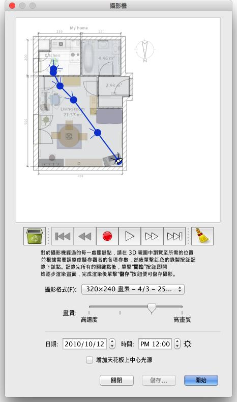

| 產生影片 | |||
去產生您家的3D影片，請選擇 3D 視圖→產生影片... 選單項目單擊在產生影片 工具上。
這將展示一個類似於那個對話方塊產生 影片。  在這個方格頂上，似乎攝影機的虛擬路徑將被拉到你的家的平面圖上。 在平面圖上，錄音、配音、還音和刪除按鈕幫助你記錄照相機道路將經過的點，
配音還音這記錄路線或者除去一些路線段。 為了建立錄影，在甜蜜的家3D 主要的視窗的3D 圖裡，選擇攝影機的最初位置，
並且在錄影創造方格裡點擊紅色按鈕開始，然後進入3D視景裡，直到攝影機的下一個位置點在紅色按鈕上再次點擊，為安排攝影機在錄影期間所經過路徑，每個位置再重複這些步驟。
|
|